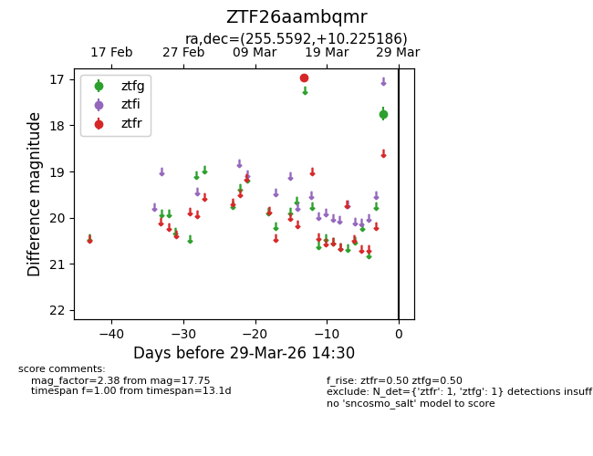
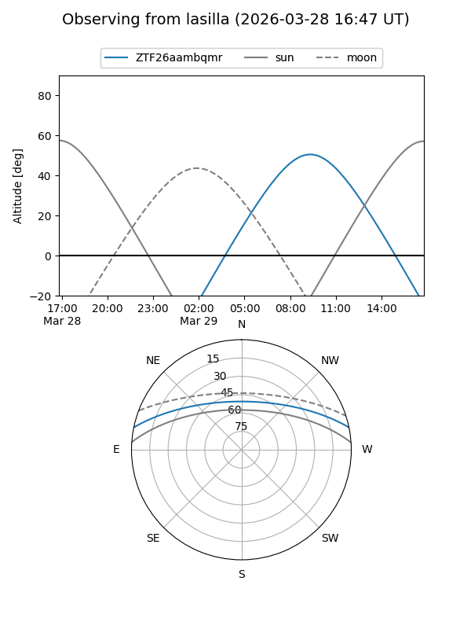
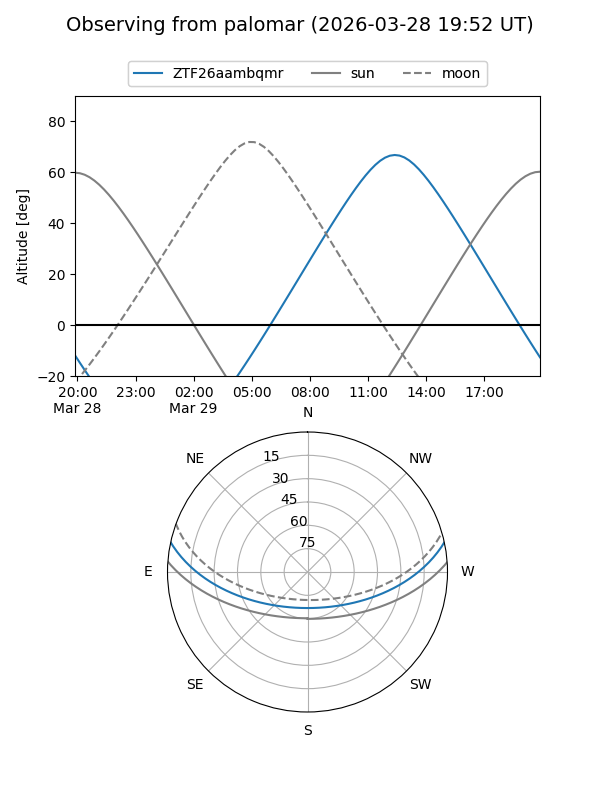

ZTF26aambqmr
Target ZTF26aambqmr at 2026-03-29 14:33
Aliases and brokers:
FINK: link
Lasair: link
ALeRCE: link
alt names
ZTF26aambqmr (ztf,fink_ztf)
Coordinates:
equatorial (ra, dec) = 255.5592,+10.22519
equatorial (HMS+DMS) = 17:02:14.20,+10:13:30.67
galactic (l, b) = (29.8014,+28.85918)
Flags:
Photometry:
last ztfg=17.75, ztfr=16.97
1 ztfg, 1 ztfr detections
Lightcurve

Visibility


Additional plots